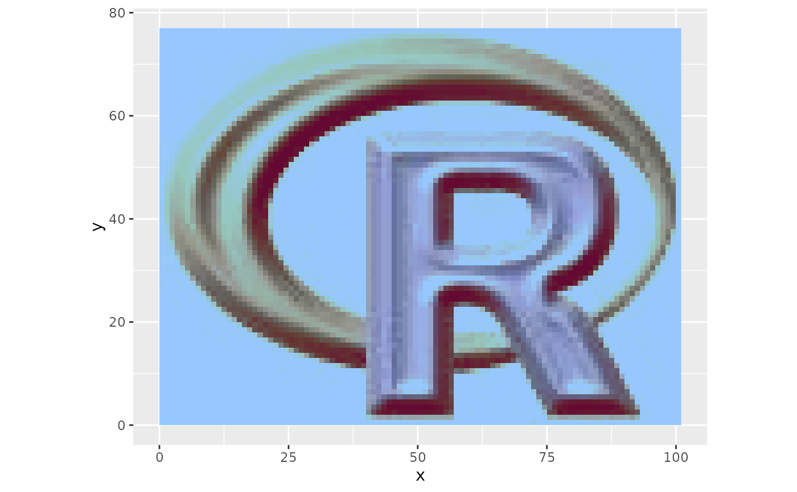
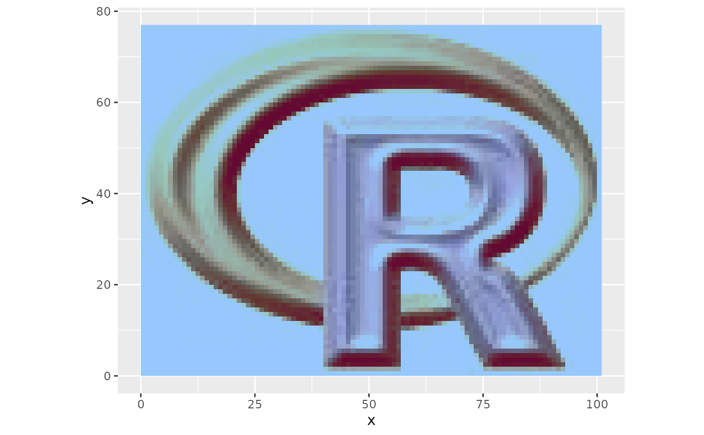

Calculates RGB color composite raster for plotting with ggplot2. Optional values for clipping and and stretching can be used to enhance the imagery.
Usage
ggRGB(
img,
r = 3,
g = 2,
b = 1,
scale,
maxpixels = 5e+05,
stretch = "none",
ext = NULL,
limits = NULL,
clipValues = "limits",
quantiles = c(0.02, 0.98),
ggObj = TRUE,
ggLayer = FALSE,
alpha = 1,
coord_equal = TRUE,
geom_raster = FALSE,
nullValue = 0
)Arguments
- img
SpatRaster
- r
Integer or character. Red layer in x. Can be set to
NULL, in which case the red channel will be set to zero.- g
Integer or character. Green layer in x. Can be set to
NULL, in which case the green channel will be set to zero.- b
Integer or character. Blue layer in x. Can be set to
NULL, in which case the blue channel will be set to zero.- scale
Numeric. Maximum possible pixel value (optional). Defaults to 255 or to the maximum value of x if that is larger than 255
- maxpixels
Integer. Maximal number of pixels used for plotting.
- stretch
Character. Either 'none', 'lin', 'hist', 'sqrt' or 'log' for no stretch, linear, histogram, square-root or logarithmic stretch.
- ext
Extent or SpatExtent object to crop the image
- limits
Vector or matrix. Can be used to reduce the range of values. Either a vector of two values for all bands (c(min, max)) or a 3x2 matrix with min and max values (columns) for each layer (rows).
- clipValues
Matrix, numeric vector, string or NA. Values to reset out of range (out of
limits) values to. By default ('limits') values are reset tolimits. A single value (e.g. NA) will be recycled to all lower/higher clippings, A vector of length two (c(min,max)) can be used to specify lower and higher replace values, applied to all bands. A two column matrix (typically with three rows) can be used to fully control lower and upper clipping values differently for each band.- quantiles
Numeric vector with two elements. Min and max quantiles to stretch. Defaults to 2% stretch, i.e. c(0.02,0.98).
- ggObj
Logical. If
TRUEa ggplot2 object is returned. IfFALSEa data.frame with coordinates and color will be returned.- ggLayer
Logical. If
TRUEa ggplot2 layer is returned. This is useful if you want to add it to an existing ggplot2 object. Note that ifTRUE&annotate = FALSEyou have to add a scale_fill_identity() manually in your call to ggplot().- alpha
Numeric. Transparency (0-1).
- coord_equal
Logical. Force addition of coord_equal, i.e. aspect ratio of 1:1. Typically useful for remote sensing data (depending on your projection), hence it defaults to TRUE. Note howver, that this does not apply if (
ggLayer=FALSE).- geom_raster
Logical. If
FALSEannotation_raster is used, otherwise geom_raster()+scale_fill_identity is used. Note that you can't use scale_fill* in addition to the latter, because it already requires scale_fill_identity().- nullValue
Numeric. Intensity value used for NULL layers in color compositing. E.g. set g=NULL and fix green value at 0.5 (defaults to 0).
Value
ggObj = TRUE: | ggplot2 plot |
ggLayer = TRUE: | ggplot2 layer to be combined with an existing ggplot2 |
ggObj = FALSE: | data.frame in long format suitable for plotting with ggplot2, includes the pixel values and the calculated colors |
Details
Functionality is based on plotRGB from the raster package.
Examples
library(ggplot2)
ggRGB(rlogo, r=1, g=2, b=3)
 ## Define minMax ranges
ggRGB(rlogo, r=1,g=2, b=3, limits = matrix(c(100,150,10,200,50,255), ncol = 2, by = TRUE))

## Perform stong linear contrast stretch
ggRGB(rlogo, r = 1, g = 2, b = 3,stretch = "lin", quantiles = c(0.2, 0.8))
## Use only two layers for color calculation
ggRGB(rlogo, r = 1, g = 2, b = NULL)
## Return only data.frame
df <- ggRGB(rlogo, ggObj = FALSE)
head(df)
#> x y fill
#> 1 0.5 76.5 #FFFFFFFF
#> 2 1.5 76.5 #FFFFFFFF
#> 3 2.5 76.5 #FFFFFFFF
#> 4 3.5 76.5 #FFFFFFFF
#> 5 4.5 76.5 #FFFFFFFF
#> 6 5.5 76.5 #FFFFFFFF
## Use in layer-mode, e.g. to add to another plot
wave <- data.frame(x = c(0, 0:100,100), y = c(0,sin(seq(0,2*pi,pi/50))*10+20, 0))
p <- ggplot(wave, aes(x, y))
p + ggRGB(rlogo, ggLayer = TRUE) +
geom_polygon(aes(x, y), fill = "blue", alpha = 0.4) +
coord_equal(ylim=c(0,75))
## Define minMax ranges
ggRGB(rlogo, r=1,g=2, b=3, limits = matrix(c(100,150,10,200,50,255), ncol = 2, by = TRUE))

## Perform stong linear contrast stretch
ggRGB(rlogo, r = 1, g = 2, b = 3,stretch = "lin", quantiles = c(0.2, 0.8))
## Use only two layers for color calculation
ggRGB(rlogo, r = 1, g = 2, b = NULL)
## Return only data.frame
df <- ggRGB(rlogo, ggObj = FALSE)
head(df)
#> x y fill
#> 1 0.5 76.5 #FFFFFFFF
#> 2 1.5 76.5 #FFFFFFFF
#> 3 2.5 76.5 #FFFFFFFF
#> 4 3.5 76.5 #FFFFFFFF
#> 5 4.5 76.5 #FFFFFFFF
#> 6 5.5 76.5 #FFFFFFFF
## Use in layer-mode, e.g. to add to another plot
wave <- data.frame(x = c(0, 0:100,100), y = c(0,sin(seq(0,2*pi,pi/50))*10+20, 0))
p <- ggplot(wave, aes(x, y))
p + ggRGB(rlogo, ggLayer = TRUE) +
geom_polygon(aes(x, y), fill = "blue", alpha = 0.4) +
coord_equal(ylim=c(0,75))